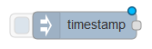
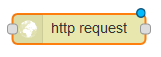

Create a Twitter flow
Introduction
A simpler example, named Create your first flow is available. It explains how create a basic workspace with 3 nodes : inject, function and debug.
Here, you are going to create a workspace using inject, debug, httpRequest, function and twitter nodes (only for the second part). We are simply going to tweet some informations about the live UK total electricity consumption.
You can add a new sheet by clicking the little “+” on top of your workspace.
Creation - First part
Add an inject node

and change its parameters by double-clicking. Change the repeat into “interval” and every 5 minutes on every day. This parameters allows to inject automatically every 5 minutes.
Now, add the httpRequest node (in part “functions”)

and edit its URL :
And a function node (Warning : outputs = 2) :

The code is just after the image so you can copy/paste and don’t forget to delete ‘return msg;’ from the function node when you create it.
// does a simple text extract parse of the http output to provide an
// object containing the uk power demand, frequency and time
if (~msg.payload.indexOf('<BR')) {
var words = msg.payload.split("div")[1].split("<BR");
if (words.length >= 3) {
msg.payload = {};
msg.payload.demand = parseInt(words[0].split(":")[1]);
msg.payload.frequency = parseFloat(words[2].split(":")[1]);
msg.payload.time = words[1].split(">")[1];
// Create the true/false signal based on the frequency.
msg2 = {};
msg2.payload = (msg.payload.frequency >= 50) ? true : false;
return [msg,msg2];
}
}
Add 2 debug and wire your system like the following picture, deploy and inject:
Some informations :
The function return 2 parameters : msg and msg2. It means that the first output receives the first parameter and the second output receives the second parameter.
Creation - Second part
For this part you will need a twitter account. Keep the project that you did in the last step. Add a twitter node with an input and edit it by double-clicking.
Add your account by clicking on the little pen and follow the different step to allow Node-Red to tweet on your twitter account.
When it’s done, you can remove the twitter window and go back on your node-red window.
Now, you are going to tweet the informations that you want. For example, if you want to tweet the demand of UK power demand, add some code lines in the function :
Now connect your twitter node to the third output of the function. Deploy and check your twitter.
As long as the server is running, your Node-Red will publish on your twitter account. Sometimes on Node-red you can see this error in the debug mode :
Don’t worry it’s normal. If you try to tweet the same thing that your last tweet, twitter will stop you. It simply means that the demand is the same than 5 minutes ago.
Get the flow
[{"id":"69d1ceaa.846538","type":"function","name":"UK Power Demand","func":"context.demand = context.demand ||0;\n// does a simple text extract parse of the http output to provide an\n// object containing the uk power demand, frequency and time\n\nif (~msg.payload.indexOf('<BR')) {\n\tvar words = msg.payload.split(\"div\")[1].split(\"<BR\");\n\tif (words.length >= 3) {\n\t\tmsg.payload = {};\n\t\tmsg.payload.demand = parseInt(words[0].split(\":\")[1]);\n\t\tmsg.payload.frequency = parseFloat(words[2].split(\":\")[1]);\n\t\tmsg.payload.time = words[1].split(\">\")[1];\n\t\tmsg2 ={};\n\t\tmsg2.payload = (msg.payload.frequency >= 50) ? true : false;\n\t\t\n\t\tif(msg.payload.demand != context.demand){\n\t\t\tvar msg3 = {};\n\t\t\tmsg3.payload = msg.payload.demand;\n\t\t\tcontext.demand = msg.payload.demand;\n\t\t\treturn [msg,msg2,msg3];\n\t\t}\n\t\treturn [msg,msg2];\n\t}\n}\n","outputs":"3","x":440,"y":162,"z":"b40c4b9d.b2b67","wires":[["5bf6b8ba.1b1dd8"],["a604eec7.56b388"],["c9c8818b.3c3bd8"]]},{"id":"11d199a1.61e8ee","type":"inject","name":"Tick","topic":"","payload":"","payloadType":"date","repeat":"","crontab":"*/5 * * * *","once":false,"x":123,"y":162,"z":"b40c4b9d.b2b67","wires":[["315bb064.6cc13"]]},{"id":"5bf6b8ba.1b1dd8","type":"debug","name":"","active":true,"complete":false,"x":640,"y":90,"z":"b40c4b9d.b2b67","wires":[]},{"id":"a604eec7.56b388","type":"debug","name":"","active":true,"complete":false,"x":641,"y":162,"z":"b40c4b9d.b2b67","wires":[]},{"id":"315bb064.6cc13","type":"http request","name":"UK Power","method":"GET","url":"http://www.nationalgrid.com/ngrealtime/realtime/systemdata.aspx","x":263,"y":162,"z":"b40c4b9d.b2b67","wires":[["69d1ceaa.846538"]]},{"id":"c9c8818b.3c3bd8","type":"twitter out","name":"Tweet","x":659,"y":263,"z":"b40c4b9d.b2b67","wires":[]}]